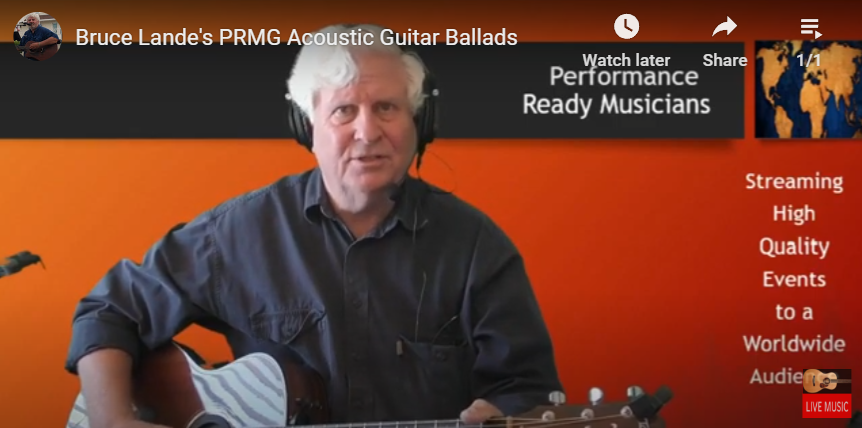
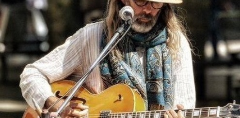

Biography

Six Decades of Crowd-Pleasing Music
Bruce Lande is a singer and guitar player with over six decades of experience entertaining audiences in Texas, New York, and North Carolina. He focuses on crowd-pleasing songs that bring people together — from family beach gatherings to private parties, coffee shops to clubs.
His repertoire centers on the Americana, Ballads, Blues, Country, and Rock & Roll songs of the 1950s through 1970s — the music three generations of audiences know by heart and want to sing along to.
Origin — San Angelo, Texas, 1970
Bruce performed his first solo act in San Angelo, Texas in 1970 while serving in the U.S. Air Force. That early stage time in West Texas honkytonks set the foundation for everything that followed.
The Syracuse Years — Reflections Two
In the 1980s, Bruce formed a rock and roll cover band that played in clubs around Syracuse, NY, including the inaugural ball for the Mayor of Rome, NY. Reflections Two became a popular cover band for weddings and private parties throughout Central New York.
Tuesday Night Open Mic Host — Winston Salem, NC
In 2014, Bruce formed a seven-piece group that served as the host band for the Tuesday Night Open Mic in Winston Salem, North Carolina. The band backed up and played alongside many popular local artists including Junior Dunn, Lisa Smith, The Junction Trio, and many others — giving emerging performers a professional band behind them every week.
Performance Ready Musicians — The Pandemic Years
During the COVID pandemic, Bruce hosted the Performance Ready Musicians group on Facebook — an online showcase of pre-screened, talented artists from around the world. Regular performers included Joe Quinn and Tommy Keyes from Ireland, Steve Flocco, Bernie Drury, and Tom Fairnie from the United States, John Kampouropoulos from Greece, Markus Koehorst from Spain, and many more. Bruce honed his personal performance skills during this time, performing almost every day for over two years.


Today — Holden Beach, North Carolina
Bruce currently entertains audiences in multiple venues around Holden Beach, NC. He is the resident performer at The Scoop in Holden Beach (mornings Tues–Sun, evenings Thurs–Sun in season) and is available for clubs, private parties, weddings, and community events throughout Eastern North Carolina.